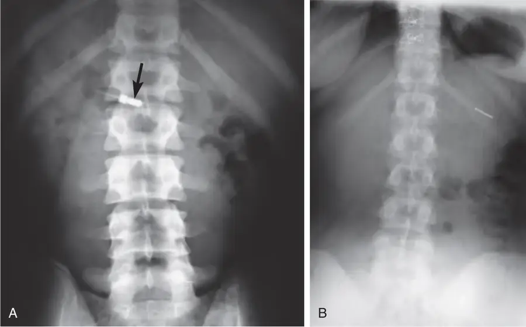
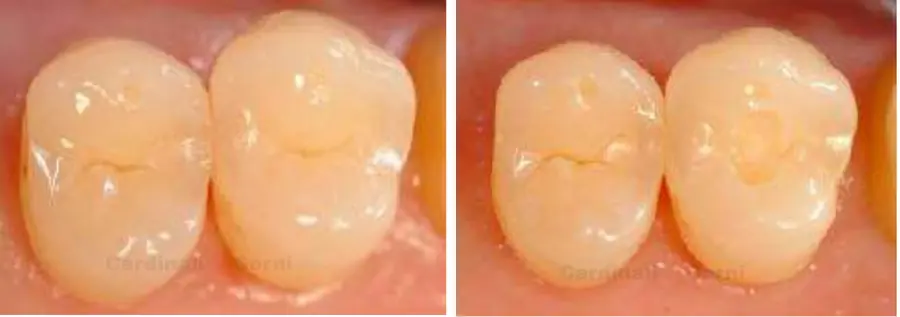

نسخه استخراجشده؛ ترجمه یا تأیید علمی انجام نشده است. وضعیت: captured
دانشجویی برای درمان ریشهی مولر اول پایین، «فقط برای پیدا کردن کانالها» سقف اتاقک پالپ را بیرابردم برداشت و یک فایل K کوچک در کانال مزیال گذاشت. زبان بیمار تکان خورد و فایل از انگشتش لیز خورد. استاد کار را متوقف کرد. کجای کار اشتباه بود؟

قاعده ساده است: رابردم را پیش از ورود به فضای پالپ بگذار. از لحظهای که سقف اتاقک باز میشود، بزاق و باکتریهای دهان به کانال راه دارند.
بیرابردم، بهویژه در دندان خلفی، فایل را از ترس لیز خوردن محکم میگیری. در کانال خمیده این فشار لج میسازد و بخش اپیکال پس از لج شکلنیافته، کمپاک و پرنشده میماند. زیر رابردم فایل را سبک در دست میگیری و حس لامسهات بهتر است.
پیش از رابردم فقط کارهایی را انجام بده که به فضای پالپ نمیرسند:

خط قرمز: تا رابردم روی دندان نیست، هیچ فایل و بروچی وارد کانال نمیشود. شروع حفرهی دسترسی پیش از رابردم گاهی لازم است؛ کار با ابزار کانال هرگز.